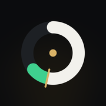

Overlay · design system · InstrumentA precision instrument for the line.
Warm black, hairlines instead of boxes, one hero per screen. The Overlay ring is the signature gauge: the model's chance, the break-even tick, and the green slice that makes it a bet.
Color
Five warm elevations, each a step lighter. One brass accent, used only for primary actions and the "bet passes" state. Every semantic color is paired with a word or a shape, never color alone.
Surfaces
Text
One warm white at three opacities. Contrast is measured on the darkest and lightest surfaces.
Accent and semantic
Shapes carry meaning too: ▲ edge, ● fair, — pass, ◆ live, ▼ loss. Brass "Bet" is the only filled pill in the app.
Sports
For wayfinding only: a dot, an icon tint, a 3px bar. Team colors follow the same rule and never fill a background.
Typography
The system font, so it reads native and works offline. Every number is SF Mono with tabular figures, so it never jumps width when it changes. Units sit smaller and lighter than the digits.
Numerals never move
This number counts every 900ms. Tabular figures keep every digit the same width, so nothing beside it shifts.
Space, shape, depth
4pt base, 8pt rhythm, 20pt sides. One continuous radius family, nested so inner radius equals outer minus padding. Depth comes from materials; only floating things cast a soft shadow.
8pt rhythm
Radii
24 outer, 12 padding, 12 inner; then 12 outer, 8 padding, 4 inner.
Materials
Bars, sheets and the tab bar are glass with a 0.5px inner highlight. Everything else is flat surface.
Motion
Every animation explains something. Entries overshoot slightly; exits settle with no bounce. Nothing runs past 500ms except the room's camera dolly. Reduce Motion turns all of it into crossfades.
Press
Icons
One set, drawn on a 24pt grid with a 1.75 stroke and round joins. Tabs, sports, prop types and actions. No emoji, no mixed libraries.
Components
Each component in every state it can be in: default, pressed, disabled, loading and empty.
Buttons
Line chip
Opening line in brass, the best line found in white, the best book bolded.
Slate-window segmented control
The thumb slides with the entry curve. Counts sit in the tertiary mono. A window with no bets stays tappable.
Sport switcher
NHL is disabled until a model exists. The brass count is bets that pass.
Probability meter
Factor bars: pushing up and pulling down
Bet card
Player row
Report-card hero
Empty state
Example copy written for this state. The real reason always comes from the slate's own rule funnel.
Toasts
Skeletons
Shaped like the layout that replaces them. No spinners anywhere.
Data visualization
The decoration is the data. Hand-built SVG, the same axis and label style everywhere, direct labels instead of legends. Charts draw in; they never bounce.
The Overlay ring
White arc: the model's chance. Brass tick: what the price needs. Green slice: the overlay. A pass draws in gray with no green.
Sim distribution
Calibration
Bankroll
The 25D hero: two prototypes
Lamar Jackson, passing yards, NFL Week 8. Same 25 answers, two ways to see them. Pick one and it becomes the hero of every report card.
A · Fingerprint
25 spokes · glow out, recede inReads as a shape at a glance. Every player gets a recognizable silhouette. Exact values come on tap.
B · Diverging stack
sorted by impactReads like a sentence: what helped most, then what hurt. Every value is visible without a tap.
Overlay by whomadethisline · tokens.css, components.css, charts.js and icons.js are the single source for every screen. Stats from ESPN; picks from the model only.